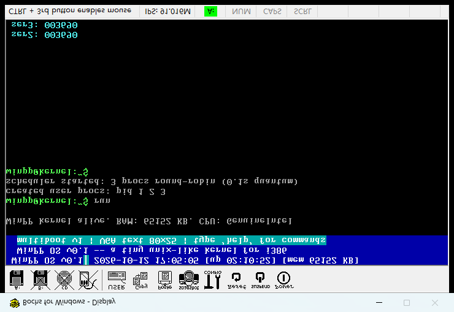
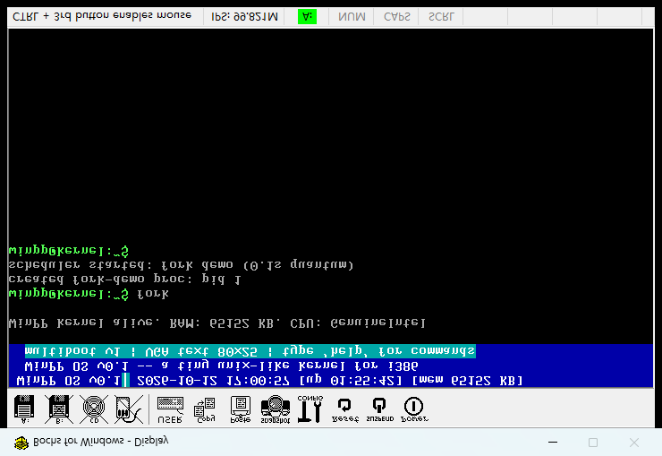
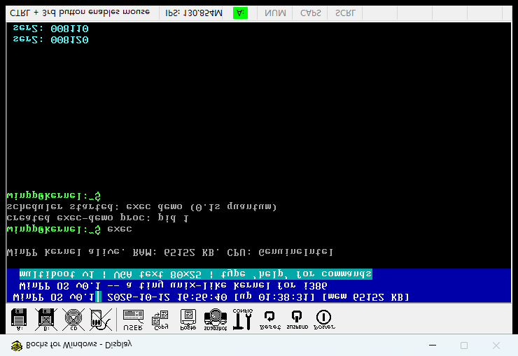
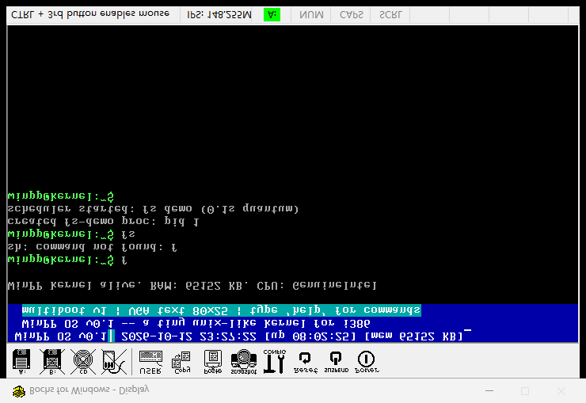

第三阶段是"多个程序能同时跑"；第四阶段是每个程序有自己的天地（独立地址空间），能繁衍（fork）、能变身（exec）、能读写数据（文件系统）——到这一步，内核就真的像一个"迷你 Linux"了。
四件大事全部在 Bochs 虚拟机里开机实测、串口取证、截图留证。
每个进程拥有自己的页目录（CR3）。程序只认自己的一亩三分地，碰不到别人、也碰不到内核。
已完成 · 实测通过进程调用 fork()，内核复制出一个一模一样的进程，父子各自独立运行。
已完成 · 实测通过进程调用 exec()，把自己换成另一个程序继续跑——同一个进程，不同的灵魂。
已完成 · 实测通过内存盘 + open/read/write/close 系统调用。用户程序能创建文件、写数据、读回来。
已完成 · 实测通过用户程序通过 int 0x80 进入内核，eax 指定调用号。第四阶段新增 3-8 号。
| 编号 | 系统调用 | 参数 | 作用（白话） |
|---|---|---|---|
| 0 | yield | — | 主动让出 CPU 时间片 |
| 1 | write | fd, buf, len | 向屏幕(1)/串口(2)输出 |
| 2 | exit | — | 退出当前进程 |
| 3 | fork | — | S4-2 分身：复制出子进程，父得子 pid、子得 0 |
| 4 | exec | prog_idx | S4-3 变身：同一进程换成另一个程序 |
| 5 | open | name, flags | S4-4 打开/创建文件，返回 fd |
| 6 | write | fd, buf, len | S4-4 向文件写数据（写入内核内存盘） |
| 7 | read | fd, buf, len | S4-4 从文件读数据（内核拷回用户内存） |
| 8 | close | fd | S4-4 关闭文件 |
四段铁证：串口原文为 COM1 端口抓取，截图来自 Bochs 2.8 显示窗口 PrintWindow 抓屏。




数字转 ASCII 的起始指针指到空格位，把 "fork: parent 000000" 打成 "parent0000000"。修复：leal 13 → 19（数字区末尾+1）。
SendInput 的 PS/2 键位表只有部分字母，"fork" 的 f/e 被跳过成 "ork"，命令不识别。修复：补全 a-z 全部键位。另修复偶发丢键：命令可重发。
第四阶段四步走完，第五阶段起进入规划区（可裁剪、可调序）。
软盘引导、保护模式、22 条命令、窗口 UI —— 已完成
物理内存 pmm + 分页 paging + 内核堆 kheap + 缺页处理 —— 已完成
GDT 6 表、TSS、int 0x80、run/ps/kill/stop —— 已完成
每人一房间、分身、变身、读写数据 —— 本次全部实测通过
管道 pipe、信号、同步原语 —— 规划中
ATA 硬盘驱动，断电不丢数据 —— 规划中
open/read/write/close 全面化、libc 子集 —— 规划中
sleep 睡眠、wait 等待、优先级 —— 规划中
以太网 / IP / UDP —— 进阶可选
窗口系统 —— 回应最初"干净窗口"的愿望